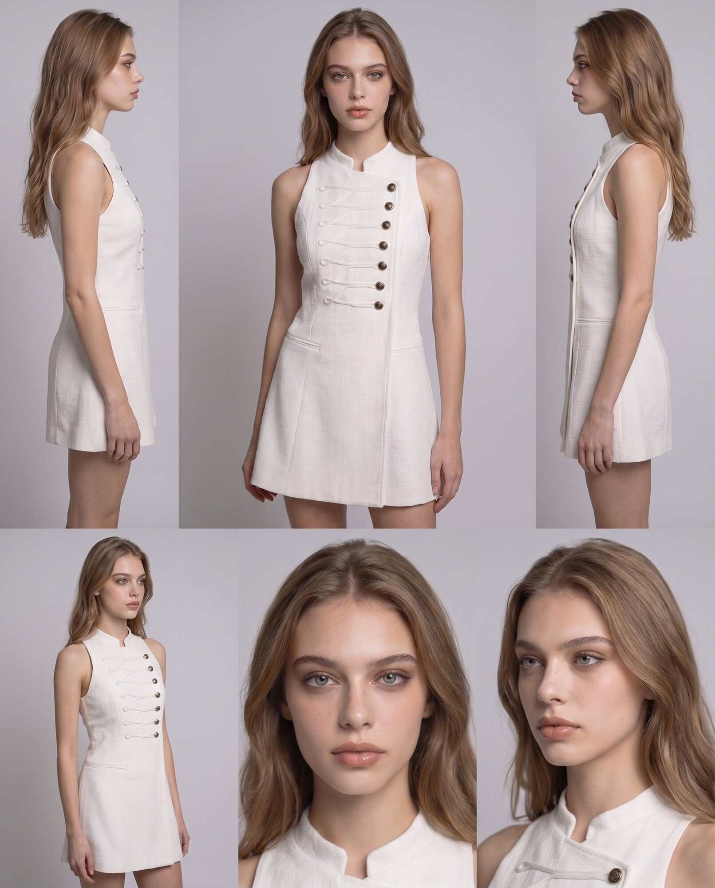
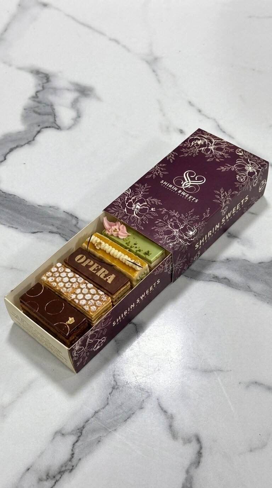
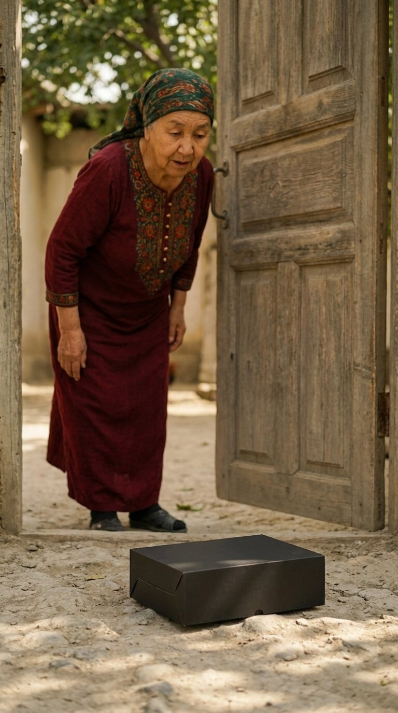
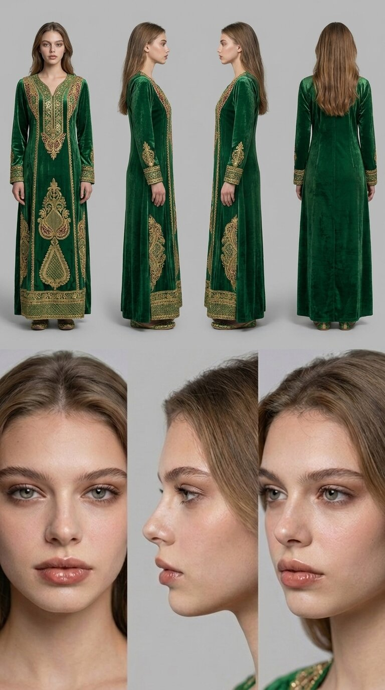

Разбор кадра · Look 01
Fashion — Brooklyn Editorial
Этап 01
Референс

Этап 02
Генерация
Этап 03
За каждым кадром в портфолио стоит путь: референс фиксирует продукт, персонажа или настроение, генерация превращает его в готовую сцену, а анимация оживляет результат движением. Ниже — три разбора из разных проектов.





Лист консистентности модели — несколько ракурсов и планов одного лица и позы. Задаёт внешность, которая остаётся неизменной в каждом кадре серии.
Nano Banana Pro и GPT Image 2.0 превращают референс в готовую фотографию: модель, локация, свет и текстуры собираются в единую сцену.
Kling 3.0 и Seedance 2.5 добавляют движение — ветер, шаги, поворот головы — превращая статичный кадр в живую сцену для рилс и рекламы.